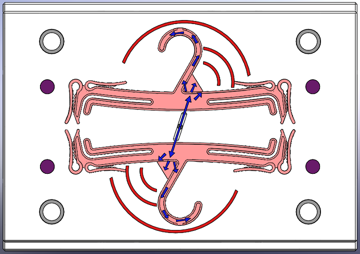

|
Ýlyaz Ýdrizoglu
Makine Yüksek Mühendisi
Þubat 2010, Bursa
www.ilyazidrizoglu.com
Not: Uludað Üniv. FBE Makine Müh. Bölümü Yük. Lisans Tezi öncesindeki seminerinde sunulan bu çalýþma, Mayýs 2011'de TurkCADCAM.net portalýndan yayýnlanmaya baþlamýþtýr.
Giriþ:
Bilgisayar Destekli Mühendislik (Computer Aided Engineering, CAE), mühendislik çalýþmalarýnýn yürütülmesinin her aþamasýnda, ürün ve proseslerin tasarýmýnda, analizinde, ürünlerin üretilmesinde, bilgisayarlarýn kullanýlmasý olarak tanýmlanýr.
Plastik enjeksiyon kalýp tasarýmýnda kullanýlan bazý analiz programlarý þunlardýr:
Moldflow, Moldex3D, SIMPOE, SimMold, SIGMASOFT
Bu çalýþmada “Moldflow” analiz yazýlýmý ile seçilen bir plastik parçaya hangi analizlerin yapýlabileceðini ve elde edilen sonuçlarýn neler olduðunu açýklamak hedeflenmiþtir.
Moldflow nasýl bir analiz programdýr?
Moldflow, sonlu elemanlar yöntemini kullanarak analiz yapmaktadýr. 2 ve 3 boyutlu akýþ alanlarýnda ve özellikle ince kesitli parçalarýn analizinde oldukça güvenilir sonuçlar vermektedir. Güvenilirliði nedeni ile endüstride de yaygýn kullaným alaný bulmaktadýr.
Kalýp imalatý baþlamadan önce, plastik parça, kalýp ve plastik enjeksiyon prosesinin simülasyonunu gerçekleþtirmemizi ve bunlarý optimize etmemizi saðlar. Plastik enjeksiyon sürecini simüle ederek en iyi parça ve kalýp tasarýmýna ulaþmak ve en düþük çevrim zamanlarý elde etmek mümkündür.
Moldflow yardýmýyla, parça geometrisindeki ve kalýnlýktaki deðiþimlerin, yolluk sisteminde ve yolluk giriþ noktasýndaki deðiþikliklerin, malzemedeki deðiþikliklerin, nihai ürün kalitesine olan etkilerini ve plastik enjeksiyon prosesi ile ilgili ortaya çýkabilecek sorunlarý imalata geçmeden önce görebiliriz.
Analizi yapýlacak ve üretilmek istenen parça malzemesinin piyasa ismi ve kullaným alanlarý þunlardýr:
Üretilecek parça malzeme türü Kristal malzemedir. Polimer ismi Polistiren, sembolü PS ve çekme payý 6/1000 dir. Bilindik kullaným alanlarý Gýda tüzüðüne uygun, Kristal kutular, Aský, Çatal, Kaþýk, Kapak, Tabak v.s.
Moldflow 7.3 part advýser modülü ile yapýlacak analizler hangileridir?
Kalýp üretimi yapýlmak istenen parçanýn tasarýmý yapýldýktan sonra, kalýp tasarýmýna geçilmeden önce parçanýn analizi þu aþamalardan gerçekleþir.
Plastik parçaya yolluk giriþ noktasýný kendimiz verebileceðimiz gibi bunu programdan hesaplamasýný da isteyebiliriz. Parçaya üretmek istediðimiz malzemeyi atayarak “En Ýyi Giriþ Noktasý” (Best Gate Location) Analizi yaptýktan sonra, programýn en iyi giriþ noktasý için bize önerdiði bölgeler Þekil 1.’de gösterilmiþtir.
Þekil 1. En Ýyi Giriþ Noktasý Analizi
Þekil 1’de görüldüðü gibi parçanýn geometrik þekline ve enjeksiyon için dolumun en iyi yapýlabileceði bölgeler mavi renginde olan bölgelerdir. Þekilde Best ve Worst olarak en iyiden en kötüye doðru renk skalasýyla belirtilmiþtir.
Þekil 1’de kýrmýzý üçgen görünümünün olduðu yerden giriþ noktasý verilmiþtir. En iyi giriþ yeri bu noktadan olabileceði gibi mavi renkli olan diðer yerlerden de giriþ yapýlabilir. Diðer bölgeler tercih edilmemiþ Þekil 1’de görüldüðü yerden giriþ yapýlmýþtýr. Bunun nedenlerini þöyle sýralayabiliriz:
Birinci Neden: Þekil 2’ de görüldüðü gibi giriþ yapýlmýþ olsaydý, malzeme kalýp dolumu baþlayacaðý anda ilk olarak mavi renkli oklarýn gösterdiði yolu takip ederdi ve bu da kalýbýn o bölgesinde aþýrý yük oluþmasýna, parçadaki bu yerin öz kütlesinin daha yoðun olmasýna ve buranýn daha erken soðumasýna neden olurdu. O bölgede oluþan aþýrý yükün etkisi dairesel kýrmýzý renkle gösterilmiþtir. Aþýrý yük belli bir parça basým sayýsýndan sonra, kalýp Þekil 3’ de görüldüðü gibi erkek ve diþi çelik kalýp ayrým çizgisinden ayrýlmaya zorlanacaktýr. Çelikleri bölgesel olarak deforme etme eðiliminde olacaðý için plastik o yerlere de hücum ederek dolmak isteyecek, bu da parçanýn çapaklý üretilmesine neden olacaktýr.
Þekil 2. Birinci Neden
Þekil 3. Bu Bölgede Oluþan Aþýrý Yükün Etkisi
Ýkinci Neden: Þekil 4’ teki gibi giriþ yapýlmýþ olsaydý, burada plastiðin ilk takip edeceði yol yine mavi renkli oklarla gösterildiði gibi olacaktý. Burada da “Birinci Nedende” yapýlan tespitler gerçekleþmiþ olacaktýr.

Þekil 4. Ýkinci Neden
Üçüncü Neden: Þekil 5’te gösterildiði gibi parçanýn bir sað yanýna birde sol yanýna yönelmiþ ikiþer giriþ yapýlmýþ olsaydý plastik yanlara doðru dolarak en sonunda ortada birleþecekti. Bu birleþme kýrmýzý zikzaklý hat ile resimde gösterilmiþtir. Malzeme iki yandan gelen plastiðin baþlangýçtaki sýcaklýktan kýsmi olarak düþük bir sýcaklýkta birleþeceði için görsel olarak birleþme izinin fark edilmesi gibi, ayrýca parçanýn kullanýmý sýrasýnda yanlardan uygulanacak yüklerde en zayýf noktanýn birleþme hattý olmasý dolayýsýyla parçanýn o hattan çatlamasý gibi sonuçlar ortaya çýkacaktýr. Bununla birlikte plastik yanlara doðru yöneldiði için askýnýn asýlma yerine doðru malzeme en son gitmiþ olacaktýr. Bu malzemenin ilk giriþ sýcaklýðýndan kýsmi olarak daha düþük olacaðý için kalýp boþluðundaki o dairesel bölgeye malzemenin daha düþük sýcaklýkta gitmesi dolayýsýyla dolumda zorluklarýn yaþanmasýna neden olacak malzeme o yerde daha zor dolacaktýr. Bunun tespit edilmesi durumunda kalýbýn dolmasý için Enjeksiyon Basýncýnýn artýrýmýna gidilmesi gerekecek bu da enjeksiyon için daha fazla güç sarfiyatýnýn olmasýna neden olacaktýr.
Þekil 5. Üçüncü Neden
Birleþme hattý ve en son dolan bölgenin neresi olduðunu görebilmek için iki yerden giriþin olduðu analizi yapmýþ olursak da “Üçüncü Nedende” üzerinde durulan tespitlere ulaþmýþ oluruz. Bu Þekil 6 ve Þekil 7 de gösterilmiþtir.
Þekil 6. Birleþme Hattý (Weld Line Locations)
Þekil 7. Dolum Süresi (Fill Time) (Dolum Süresi Analizi ile en koyu mavi olan yerin en son dolduðu görülüyor)
|